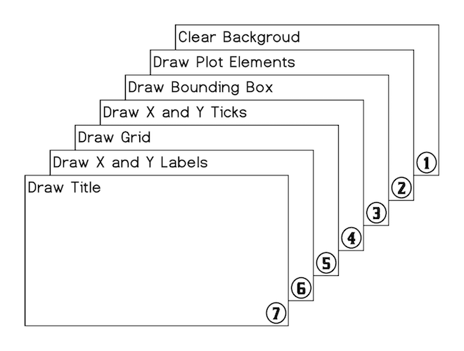
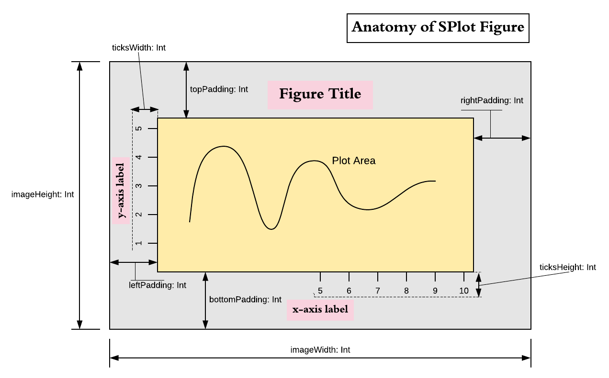

Architecture
Overview
Central element of the SPlot library is object Figure. Plot elements, such as lines and labels and so on, are
added to it and then Figure can either display an interactive window or it can be used to generate image object,
which can then be saved on disk. However, by itself Figure does almost nothing. It is really a skeleton which
stitches together different objects required to form an image or a window. All these objects, that are part of
Figure, are responsible for drawing themselves. To do so they receive appropriate context and parameters. Some of
the elements can appear multiple times in Figure, such as line plots and labels. They are added by using
Figure::add(...) method. Other elements, referenced by Figure, exist in singular form. These objects
refer to things like function that draws bounding box (a.k.a. spines of the figure) or function that draws ticks,
etc. They are supplied to the Figure constructor with certain default values that can be changed to
draw plots very differently. For example, you could change the way bounding box is plotted to draw it with rounded
corners or not draw bounding box at all. Note that default objects/functions passed to Figure
constructor already allow certain customization, but creating your own custom variants gives complete freedom to
modify figure drawing behaviour.
Pipeline Outline
After all plot elements are added to the Figure users can either call crateImage(width, height) function to
create an image or call show(width, height) to display an interactive window. In both cases blank BufferedImage
is created and then drawing pipeline is applied to it. Steps of the pipeline are shown in the figure below.

All of these steps, from 1 to 7, are performed by externally supplied functions. Plot elements drawn in stage 2 are the only ones that users usually explicitly add to the figure. All other steps are performed by singularly referenced functions for which default instances already supplied to Figure during construction.
Figure Constructor Parameters
Besides objects and functions responsible for fulfilling steps of the drawing pipeline users can pass following parameters to the Figure constructor:
name: String = "Figure"
title: String = ""
titleFont: Font = Font.decode("Times-20")
xLabel: String = ""
yLabel: String = ""
bgColor: Color = Color.WHITE
leftPadding: Int = 50
rightPadding: Int = 50
topPadding: Int = 50
bottomPadding: Int = 50
antialiasing: Boolean = true
showGrid: Boolean = false
domain: Option[(Double, Double)] = None
range: Option[(Double, Double)] = None
xTicks: (Double, Double) => Seq[(Double, String)] = Ticks.ticks10
yTicks: (Double, Double) => Seq[(Double, String)] = Ticks.ticks5
Based on these parameters, prior to executing drawing pipeline, DrawingContext object is created. It contains important figure dimensions
such as imageWidth, imageHeight, leftPadding, rightPadding, topPadding, bottomPadding, and a set of functions and other objects
required for pipeline steps to draw themselves.
Following image provides visual illustration of figure properties encapsulated in DrawingContext:

Pipeline Step Functions
Pipeline steps are performed by the following functions:
- Clear Background.
def backgroudPlotter(ctx: DrawingContext: bgColor: Color): Unit - Draw plot elements. Plot elements have three forms: trait
Plotfor drawing lines and shapes,Labelfor drawing text labels, andCompositePlotElementthat contains sequence of the other two element types.trait PlotElement trait Plot extends PlotElement { def draw(ctx: DrawingContext): Unit } trait Label extends PlotElement { def draw(g2: Graphics2D, atPosition: (Int, Int)): Unit } case class CompositePlotElement(plotElements: Seq[Either[Plot, Label]]) extends PlotElementPlot elements are drawn in the order they were added to the figure and thus can obscure each other.
- Draw bounding box
def borderPlotter(ctx: DrawingContext, color: Color): Unit - Draw ticks, first on x-axis and then on y-axis, using following two functions:
def xTicksPlotter(ctx: DrawingContext, ticks: Seq[(Double, String)]): Intand
def yTicksPlotter(ctx: DrawingContext, ticks: Seq[(Double, String)]): IntThese functions are responsible for drawing the ticks and their labels. They must return height/length of the ticks together with labels. Functions
xLabelPlotterandyLabelPlotteruse these values to find proper placement forxandylabels. - Draw grid
def gridPlotter(ctx: DrawingContext, xTicks: Seq[Int], yTicks: Seq[Int]): Unit - Draw
xandylabels using following two functions.def xLabelPlotter(ctx: DrawingContex, ticksLength: Int, text: String): Unit def yLabelPlotter(ctx: DrawingContex, ticksLength: Int, text: String): Unit - Draw figure title
def titlePlotter(DrawingContext, String, Font): Unit